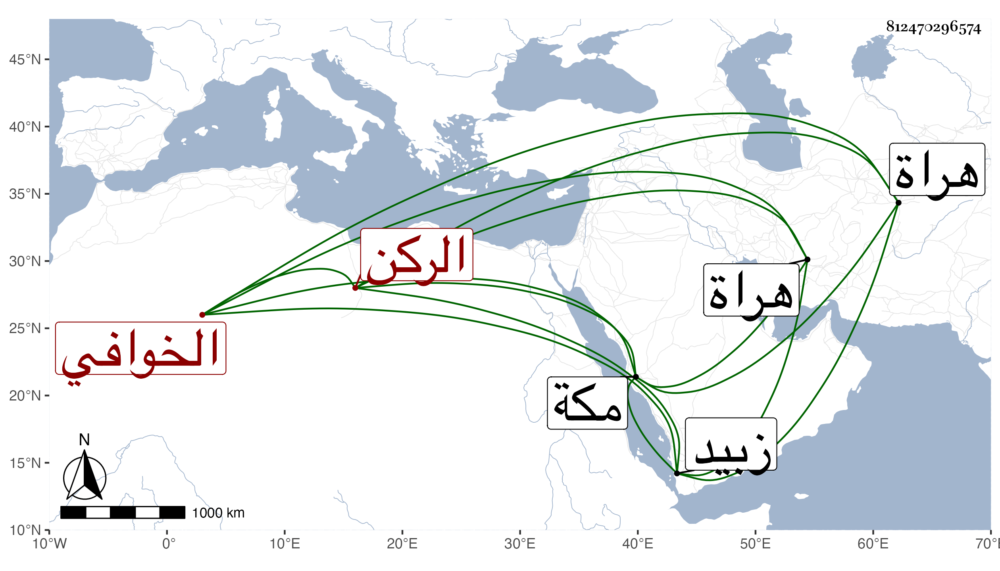

0902Sakhawi.DawLamic.ITO20230111-ara1.EIS1600.812470296574
Biography ID: 812470296574
348
محمد بن إسماعيل بن محمود الركن الخوافي سبط شارح اللباب . ولد في خامس ذي القعدة سنة ست وأربعين وسبعمائة ، وأخذ عنه الطاووسي شرح المختصر له والمواقف للايجي ، وقال كان رأسا في سائر العلوم محققا لطيف الطبع ممن أخذ عنه بمكة وزبيد الجلال عبد الواحد المرشدي النحو والأصول والمعاني والبيان وكتب له إجازة بليغة بخط حسن في سنة ثلاث وثمانمائة . ومات بهراة يوم الأحد ثامن عشرى شوال سنة أربع وثلاثين .
